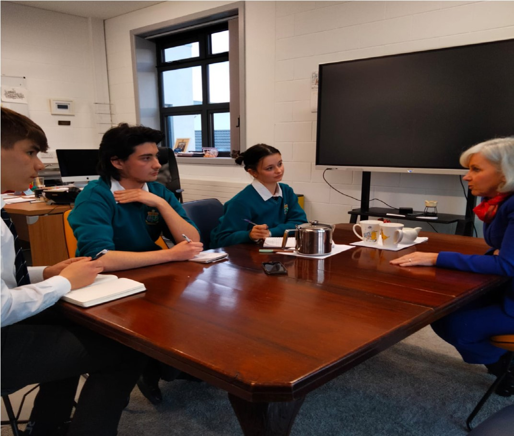

“The prefabs are fine, but they’re not as nice as rest of the School.” ~Dr Moran
Published on: 23/01/2023
Written by Liam Courtney and Sophia Ryan

It was announced early November that the Sancta Maria College would be receiving a 9 million euro grant, so we sat down with the Principal, Dr Aine Moran to talk about the details of the grant, plans for the school in the years to come and the importance of mental health resources in the school.
We began by asking how this grant would be used, Dr Moran told us that the grant would be used for an extension onto the school. This
extension will consist of six classrooms, two science labs, a new woodwork room, a home economics room and extra bathrooms.
When asked about the process of acquiring the grant Dr Moran told us that due to the lasting impact of Covid growth of school numbers
that she saw it necessary to seek out the grant to create an even more comfortable and efficient learning environment within the school.
When referring to an older part of the school, Dr moran joked that “the prefabs are fine, but they’re not as nice as the rest of school
so they needed to be replaced with proper, Functioning classrooms that are up to the 21st century standard.”
We then moved onto talking about the timeline on the construction of these classrooms, Dr Moran explained that five different design teams were visiting the school, so that they could create a proposal, for the Board of Managment to review. A design team is then chosen and they develop a proper plan. The school then has to revive planning permission which can slow down the process, Dr Moran when asked when the extension will be completed said “We would be very hopeful that we will get this done in 24 months from beginning to end, so Christmas 2024.”
We changed topic at thi point to discuss the future of the school and any hopes that she has for it, Dr Moran acknowledged that “half of our students come from outside the Louisburgh area so I’m aware that it’s very expensive for them to travel” She went on to say that this is due to the use of private buses, and how multi denominational schools have access to free transport but that isn’t available to mixed co-ed schools, however explained that she has spoken to the minister for transport, Eamon Ryan about hopefully having this changed so that “Westport and Louisburgh can become one supplier of Education in the area so that parents get a real choice whether they want to send their children to a single sex school or to a mixed school.”
Following on from this we asked about the possibility of the school getting a cafeteria, Dr Moran explained that the department of education doesn’t provide funding for the building of cafeterias, but that there is an option of the school providing hot food at lunch, but as she explained “there are businesses that survive because of the trade that students bring to to the town at lunch time, so if we were to provide our own hot food that might have a detrimental effect on the town.” Dr Moran did however say that local businesses providing the food could be a potential option down the line.
Next we wanted to ask about Dr Moran’s efforts surrounding the topic of Mental Health, Dr Moran explained that due to Covid that an atmosphere of anxiety and stress could be felt throughout the school, and that combined with the results of the planet youth survey report which showed that Sancta Maria students scored lower on the well being indicator than most other schools in the country. This was an indicator for her, that steps needed to be taken to combat this issue, one such step was the construction of “the well.” The well is a quiet, relaxed area of the school where students can go off if they’re seeking unwell, physically or mentally so they can try to calm themselves. Dr Moran then told us that before coming to Sancta Maria she was on secondment, meaning she was working in several schools across the country so as she put it “I hadn’t really seen what had happened to young people first hand, and so it kind of surprised me when I came back that people need it a little bit more support than maybe they would have had before” .
When asked if she wanted to say anything else Dr Moran said: “I’ve really enjoyed my first year at Sancta Maria and I’ve Had a lot of fun. It’s a really lovely school, it has such good staff and such good students” .